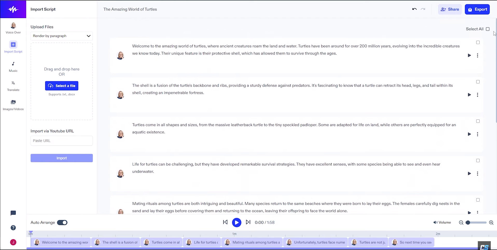
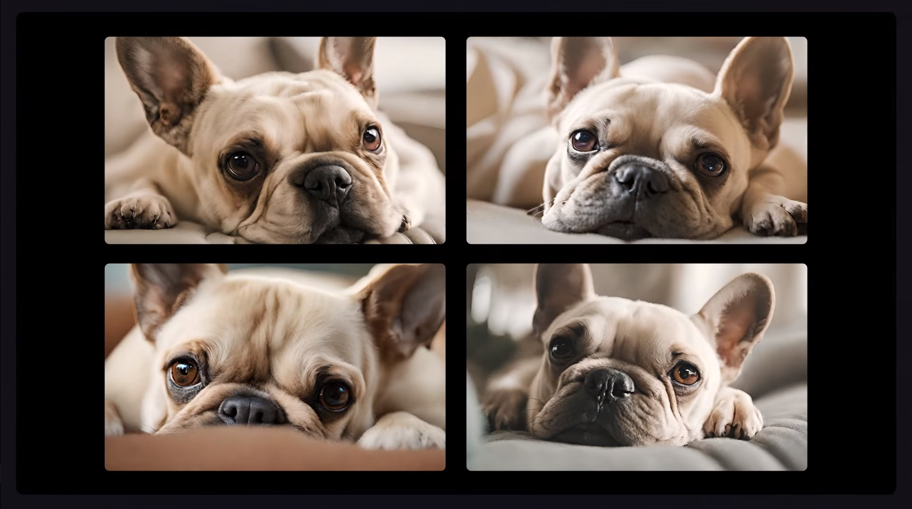

Depuis l'avènement de ChatGPT, l'intelligence artificielle (IA) a connu une évolution fulgurante,
transformant de manière significative plusieurs secteurs d'activité et notre vie quotidienne.
ChatGPT, avec ses capacités de compréhension et de génération de langage naturel, a ouvert la voie à une
interaction homme-machine plus fluide, rendant les technologies d'IA accessibles et utiles pour un large
éventail d'applications. Les amélioration des l'interaction vocale avec l'IA, ont rendu les conversations
avec les machines encore plus naturelles et intuitives. D'autre part, le domaine de la création visuelle et
artistique c'est lui aussi vu boulversé, avec l'arrivé de certaines IAs permettant
aux utilisateurs de transformer leurs idées en images et animations réalistes. Ces outils ont ouvert des portes
inimaginables dans les domaines de l'art, du design et même de l'éducation, où la visualisation de concepts
abstraits devient soudainement tangible.
L'impact futur de l'IA s'annonce encore plus transformateur. Dans l'éducation, l'IA pourrait offrir des
expériences d'apprentissage personnalisées, s'adaptant au style et au rythme d'apprentissage de chaque étudiant.
Dans les soins de santé, l'IA pourrait conduire à des diagnostics plus précis et à des traitements personnalisés.
Dans le domaine de l'environnement, l'IA pourrait jouer un rôle crucial dans la lutte contre le changement
climatique, par exemple en optimisant l'utilisation des ressources énergétiques ou en analysant de
grandes quantités de données environnementales pour prédire et atténuer les effets des
catastrophes naturelles.
Cependant, ces avancées ne sont pas sans défis. Des questions se posent autour de l'éthique,
de la confidentialité des données, et de l'impact de l'IA sur le marché du travail. Il est essentiel que la
société, y compris les développeurs d'IA, les législateurs et le public, collabore pour aborder ces problématiques
et assurer que l'IA soit développée et utilisée de manière responsable et bénéfique pour l'humanité.
Chat GPT
Le star des IAs
ChatGPT, depuis son lancement, a marqué un tournant décisif dans le domaine de l'intelligence artificielle.
Initialement conçu comme un modèle de conversation avancé,
capable de comprendre et de générer du texte fluide et pertinent, ChatGPT a grandement amélioré la façon dont
les humains interagissent avec les machines. Sa capacité à comprendre
et à répondre de manière cohérente et contextuelle a ouvert la voie à des applications variées,
allant de l'assistance client à l'éducation, en passant par la création de contenu et bien au-delà.
Avec l'évolution technologique, ChatGPT a été doté de fonctionnalités vocales, permettant des interactions par la
parole. Cette avancée a rendu ChatGPT encore plus accessible, en particulier pour les utilisateurs ayant des
limitations visuelles ou ceux préférant les commandes vocales aux interactions textuelles.
L'intégration de capacités de compréhension et de génération d'images a été une étape majeure dans l'évolution
de ChatGPT.
L'avenir de ChatGPT semble prometteur, avec des possibilités d'expansion et d'amélioration continues.
On peut envisager une intégration encore plus poussée de ChatGPT dans les systèmes éducatifs pour un
apprentissage personnalisé, dans les entreprises pour l'automatisation et l'amélioration des processus
décisionnels, et dans les services de santé pour fournir des informations médicales préliminaires et le
soutien au diagnostic.L'évolution continue de ChatGPT, notamment dans les domaines du traitement vocal et de
l'analyse d'image, augure d'une ère où l'interaction entre l'humain et la machine sera si fluide et naturelle
qu'elle deviendra une part intégrante de notre quotidien. Cette synergie entre l'homme et l'intelligence
artificielle, symbolisée et incarnée par ChatGPT, pourrait bien être le fondement sur lequel se bâtira le
futur de la technologie et de la société.
×
Speechify
L'utile et l'agreable
Speechify est une application de synthèse vocale avancée qui transforme tout texte écrit en parole.
Elle est capable de lire à haute voix des textes de divers formats, tels que des documents PDF, des
pages web, des e-mails et des fichiers Word. L'application offre une gamme de voix qui sonnent naturelles
et humaines, y compris des options de voix de célébrités, permettant aux utilisateurs de choisir parmi
différentes langues et accents pour une expérience d'écoute personnalisée.
Speechify est particulièrement
utile pour les personnes ayant des difficultés de lecture, comme la dyslexie, ou pour ceux qui préfèrent
l'apprentissage auditif. Disponible sur plusieurs appareils, elle peut être utilisée sur des smartphones,
des tablettes et des ordinateurs, permettant la synchronisation de l'expérience d'écoute sur différents
appareils. Les utilisateurs peuvent ajuster la vitesse de la parole pour une écoute rapide ou ralentie
selon leurs besoins. Elle permet également la lecture en arrière-plan, facilitant l'écoute tout en effectuant
d'autres tâches. Enfin, Speechify supporte une variété de langues, ce qui la rend utile pour un public mondial.
×

MidJourney
La reference de la creation d'image
Midjourney a marqué une évolution significative dans le monde de l'intelligence artificielle,
particulièrement dans le domaine de la création visuelle. En offrant des capacités avancées de génération
d'images, Midjourney a révolutionné la façon dont les individus et les professionnels créent et interagissent
avec le contenu visuel.
L'impact de Midjourney se manifeste principalement dans sa capacité à transformer des idées abstraites ou des
descriptions textuelles en images concrètes et détaillées. Cette fonctionnalité a ouvert de nouvelles portes
pour les artistes, les designers et les créatifs, leur permettant d'explorer de nouvelles formes
d'expression artistique et de donner vie à des visions qui étaient auparavant difficiles à réaliser.
En outre, Midjourney a joué un rôle crucial dans la démocratisation de la création de contenu visuel.
Les utilisateurs sans formation artistique préalable peuvent désormais créer des œuvres visuelles complexes,
réduisant ainsi la barrière à l'entrée dans le monde du design et de l'art.
Dans le domaine de l'éducation et de la formation, Midjourney offre des opportunités uniques pour
l'enseignement visuel. Les éducateurs peuvent utiliser cette technologie pour illustrer des concepts complexes
ou pour créer du matériel pédagogique engageant, rendant l'apprentissage plus interactif et visuellement stimulant.
L'évolution de Midjourney ne se limite pas à la création d'images statiques. La plateforme continue de
s'étendre, explorant des possibilités comme l'animation et la création de contenu vidéo, ce qui pourrait
transformer davantage les industries du cinéma et de la publicité.
En regardant vers l'avenir, Midjourney a le potentiel de jouer un rôle encore plus important dans divers
secteurs, y compris le marketing, où la création rapide de visuels publicitaires personnalisés pourrait devenir
une norme, ou dans l'architecture et l'ingénierie, aidant à visualiser des projets avant leur construction.
×
Runway
La machine a reve
Runway, dans le domaine de l'intelligence artificielle, représente une innovation remarquable,
particulièrement pour la création et la manipulation de contenu visuel et multimédia. Cette plateforme a
révolutionné la manière dont les créateurs, qu'ils soient artistes, designers, ou vidéastes, interagissent
avec la technologie pour réaliser leurs visions créatives.
L'impact de Runway est palpable dans sa capacité à rendre des processus complexes de manipulation d'image et de vidéo
accessibles à un large public. En offrant des outils intuitifs basés sur l'IA, Runway a démocratisé des techniques avancées
de design et d'édition, qui étaient auparavant réservées aux professionnels disposant de compétences techniques spécialisées.
Cette accessibilité a ouvert la porte à une nouvelle vague de créativité, permettant à tout un chacun d'explorer et de
réaliser des projets visuels innovants.
Au-delà de la création d'images statiques, Runway excelle dans l'animation d'images, la génération de contenu vidéo,
et même dans des applications plus complexes comme la modélisation 3D et la réalité augmentée. Ces capacités étendent
considérablement le champ des possibles pour les créateurs de contenu, leur permettant de donner vie à des idées qui
auraient été autrement difficiles à concrétiser.
Runway s'est également avéré être un outil précieux dans le secteur de l'éducation et de la formation. Il permet aux
étudiants et aux enseignants de s'engager dans des projets multimédias interactifs, facilitant ainsi l'apprentissage
et la compréhension de concepts parfois abstraits.
En conclusion, Runway ne se contente pas de simplifier la création de contenu visuel et multimédia ; elle inspire et
habilite une nouvelle génération de créateurs à explorer des frontières jusqu'alors inatteignables dans l'univers numérique.
Son impact continu sur les industries créatives et éducatives promet de remodeler la façon dont nous concevons, apprenons
et interagissons avec le monde numérique.
×

Tesla Autopilot
Le transport du futur
Tesla Autopilot représente une avancée majeure dans le domaine de la conduite autonome, marquant une étape
significative dans l'histoire de l'automobile et de l'intelligence artificielle. Cette technologie a non
seulement transformé la manière dont nous envisageons la mobilité personnelle, mais elle a également défini
de nouveaux standards en matière de sécurité et d'innovation technologique dans l'industrie automobile.
En offrant des fonctionnalités telles que le changement automatique de voie, le freinage d'urgence autonome et
l'assistance
active au stationnement, Autopilot a considérablement amélioré l'expérience de conduite. Les conducteurs peuvent
désormais
bénéficier d'un niveau de confort et de sécurité accrus, en particulier lors de longs trajets ou dans des
conditions de circulation difficiles.
Au-delà de l'amélioration de l'expérience individuelle de conduite, Tesla Autopilot a un impact significatif
sur la sécurité routière en général. En réduisant le potentiel d'erreur humaine, qui est une cause majeure
d'accidents de la route, cette technologie contribue à rendre les routes plus sûres pour tous les usagers.
L'avenir de Tesla Autopilot est prometteur, avec des avancées continues vers une autonomie complète. Tesla continue
d'améliorer et de mettre à jour le système, en intégrant de nouvelles fonctionnalités et en affinant les existantes
grâce à des mises à jour logicielles régulières. À mesure que la technologie progresse, on peut s'attendre à ce
que la conduite autonome devienne encore plus intégrée dans notre vie quotidienne, offrant une mobilité plus
efficiente, plus sûre et plus accessible à un plus grand nombre de personnes.
En résumé, Tesla Autopilot ne se contente pas de redéfinir l'expérience de conduite ; il pose les bases d'une
révolution
dans le domaine du transport personnel et de la mobilité urbaine, promettant un avenir où les voitures autonomes
seront une composante essentielle de notre système de transport.